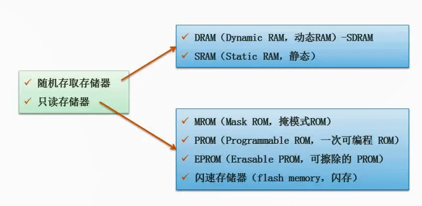
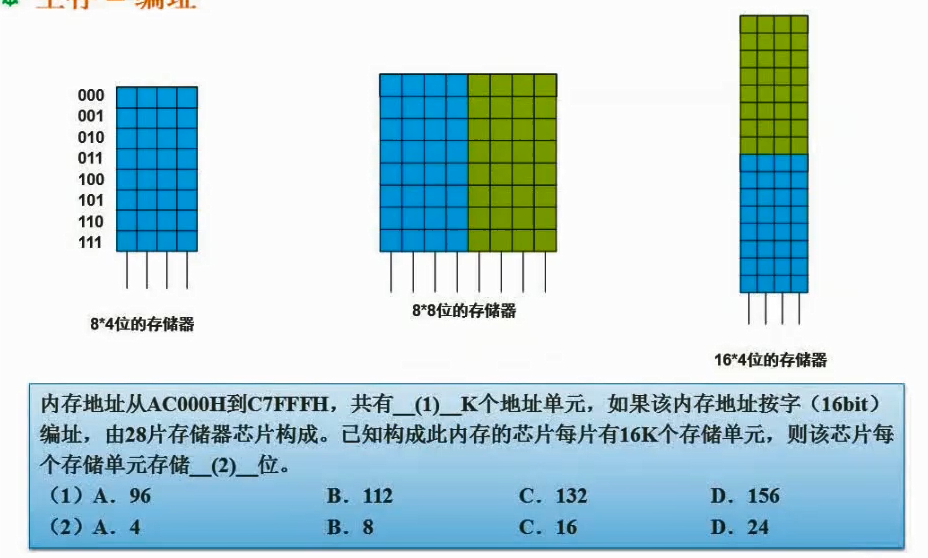

2.15 随机存储器与只读存储器

随机存取存储器
Random Access Memory，RAM
- 当计算机关闭或断电时，存储在其中的数据就会丢失
- 可以读取和写入数据
- 通常用于存储操作系统、应用程序和其他正在运行的程序所需的数据
只读存储器
Read-Only Memory，ROM
- 在制造过程中被写入，通常无法被修改或删除
- 通常用于存储计算机的启动程序和其他重要的系统数据
内存其他形式考题

（1）计算流程
- 用
C7FFFH减去AC000H怎么计算呢，一般先把C7FFF+1，得出C8000。 - 然后
C8000 - AC000，8-C不够减，借一位，此处是16进制，一位是16。 - C是十进制的12，
8+16-12=12也就是C - 然后
B-A=1 - 得出
1C000H，转换成二进制也就是0001 0110 0000 0000 0000 - 由于我们要除以1024，也就是二进制的
10 0000 0000 - 那么两者相除，就是把后面10个0去除，得出
0001 0110 00整理一下得出0101 1000，再转换成二进制等于64+32+16=112
（2）计算流程
- 题目说内存由28片存储器芯片组成，每片存储16k
- 由上面那个空得知内存共有112k个地址单元，并且内存地址按16bit编址
- 那么设每个存储单元存储x位，
28*16*x=112*16,求出x=4